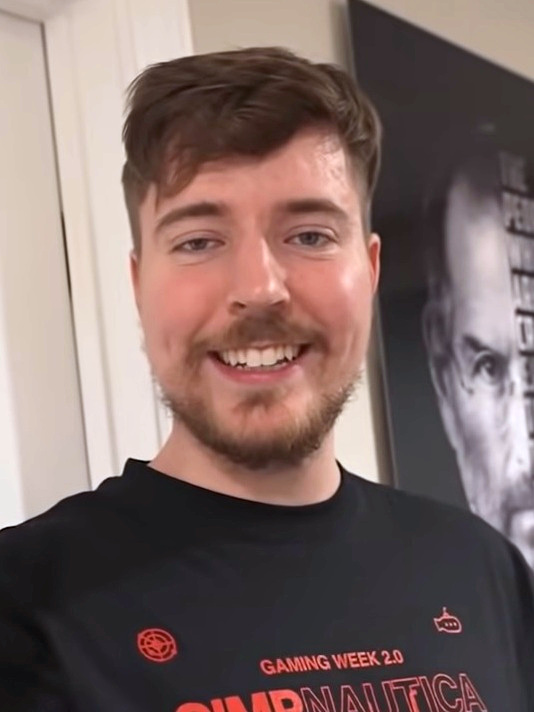

Джиммі Дональдсон ( англ. Jimmy Donaldson ; нар . 7 травня 1998 , Вічіто , Канзас , США ), більш відомий під псевдонімом MrBeast , - американський відеоблогер , діяч шоу-бізнесу , творець одного ім'я . Він вважається піонером жанру відео на YouTube, присвяченого зйомкам дорогих трюків . У січні 2023 року кількість передплатників його каналу досягла 130 млн осіб , що зробило його четвертим за кількістю передплатників на платформі.
В команді Бістера Біста є Карл Кріс та Чендлер, рідше можна знайти Таріка і навіть Дріма. Ну, не знаю як вам але по моєму вони там займаються якоюсь фігньою...

Крім проекту MrBeast, Дональдсон веде YouTube-канали Beast Reacts, MrBeast Gaming, MrBeast 2 (колишній MrBeast Shorts), та благодійний канал Beast Philanthropy . Раніше він вів канал MrBeast 3 (спочатку MrBeast 2), який зараз неактивний . Дональдсон був одним з 10 найбільш високооплачуваних ютуберів 2020 . Є одним із засновників компаній MrBeast Burger, Feastables, Team Trees - фонду зі збору коштів для організації Arbor Day Foundation , який зібрав понад 23 млн доларів, і Team Seas - фонду зі збору коштів дляOcean Conservancy і The Ocean Cleanup , який зібрав понад 30 млн доларів. Дональдсон тричі отримував нагороду Creator of the Year на церемонії Streamy Awards у 2020, 2021 та 2022 роках; він також отримав нагороду Favorite Male Creator на Kids' Choice Awards у 2022 році.
 меню